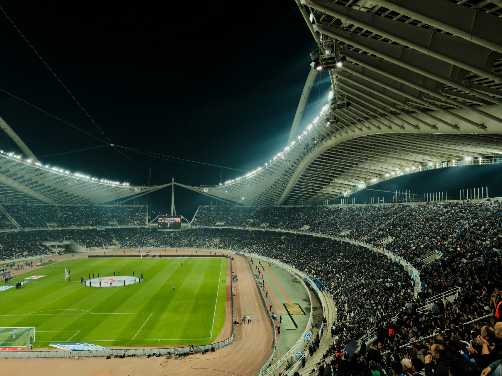
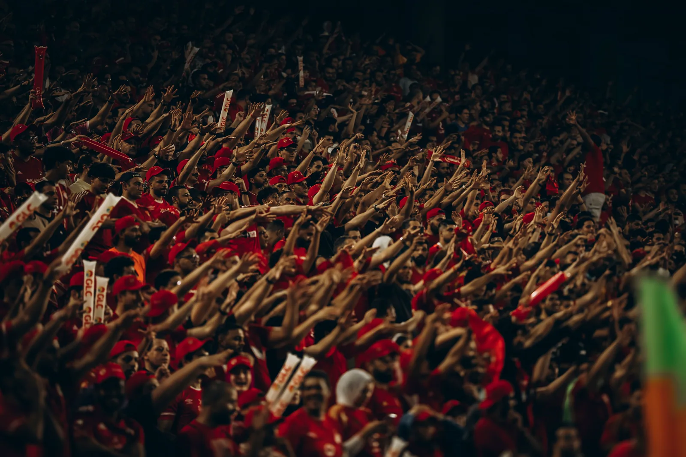

Analyse en cours
Édition du jour
Saison 2026/27
Pronostic du jour
Le choix retenu, sans détour.
Lecture des rencontres disponibles…
Aucun pari recommandé aujourd’hui.
Aucun match n’a franchi tous les contrôles. Le site sera actualisé demain matin.

Pourquoi ce choix
Deux estimations à comparer.
Les détails apparaissent dès qu’une recommandation est disponible.
- Cote disponible
- —
- Mise indicative
- —
- Niveau de prudence
- —
0matchs examinés
0pari retenu
Les autres rencontres restent analysées, mais ne sont pas présentées comme des pronostics.

Comment ça marche
Une publication en trois étapes.
- 1Les matchs sont comparés.
Le calendrier, la forme récente et les cotes disponibles sont étudiés avant le coup d’envoi.
- 2Les choix fragiles sont écartés.
Une rencontre n’apparaît pas si les différents contrôles ne vont pas dans le même sens.
- 3Le résultat est vérifié.
Après le match, le pari est marqué gagné, perdu ou annulé et reste dans l’historique.
Le contexte réel
Avant le match, les chiffres. Après, le score.
La recommandation est enregistrée avant le coup d’envoi. Elle ne peut pas être modifiée après le résultat.
Résultats vérifiés
Chaque pari garde son résultat.
Vérification de l’historique…
Chargement des résultats enregistrés.
En attente0
Gagnés0
Perdus0
Les premiers résultats apparaîtront ici après les matchs recommandés.
À garder en tête
Un pronostic reste une estimation, jamais une garantie. La mise affichée est indicative. Ne misez pas une somme que vous ne pouvez pas perdre.